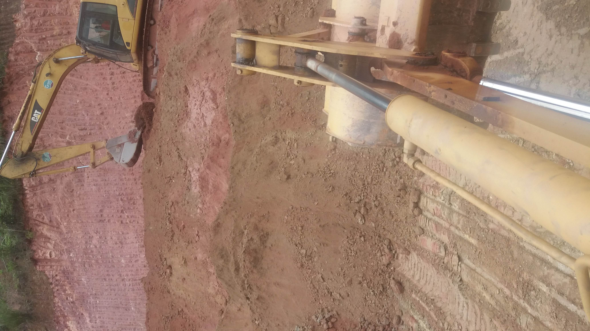
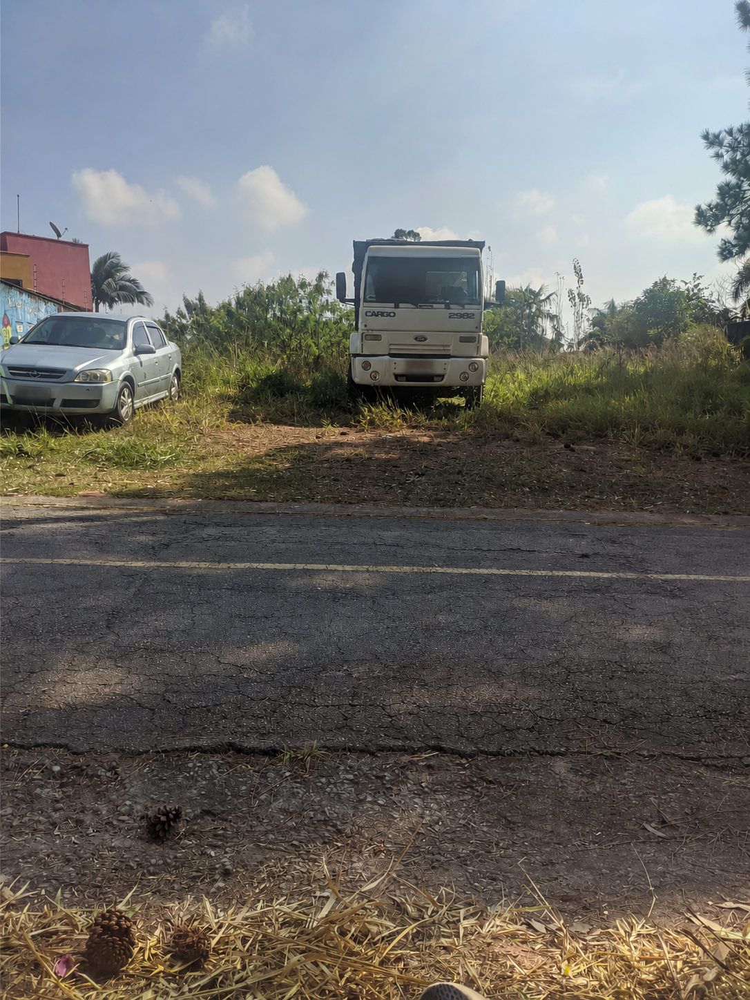
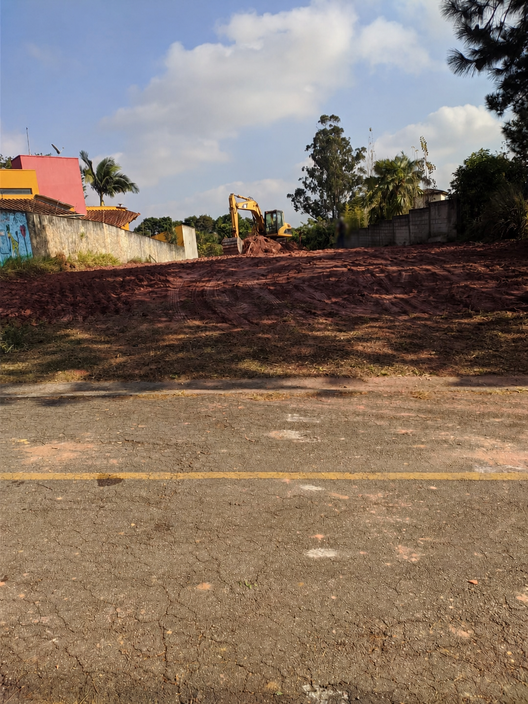

Limpeza de terreno
Remoção de vegetação, destocamento, retirada da camada orgânica e do entulho. O terreno sai limpo e pronto para começar a obra.

Do terreno bruto à cota de projeto
Limpeza de terreno, escavação, corte e aterro, demolição e locação de equipamento. Frota própria e operadores fixos. Base em Taboão da Serra, atendimento na Grande São Paulo e região.
A empresa
Desde 2000, a Peixoto Terraplenagem atua com base em Taboão da Serra, atendendo a Grande São Paulo e região.
Com frota própria e operadores fixos, atendemos construtoras, loteadores e cliente final. Quem orça a obra é quem responde por ela até a entrega.
O trabalho é o mesmo desde o primeiro dia: entregar o terreno pronto para construir, no volume combinado e no prazo combinado.
O que fazemos
Remoção de vegetação, destocamento, retirada da camada orgânica e do entulho. O terreno sai limpo e pronto para começar a obra.
Escavação, corte e aterro, carga e abertura de acessos. A terra sai de onde sobra e completa onde falta, até o terreno chegar na cota.
Ver as etapas →Equipamentos para locação, com ou sem operador, por diária, semana ou mês. Disponibilidade e condições sob consulta.
Consultar disponibilidade →A terraplenagem, etapa por etapa
Limpeza, destocamento e remoção da camada orgânica. Abertura dos acessos para caminhão e máquina entrarem desde o primeiro dia.
Escavação, corte e aterro, carga e transporte do material. Bota-fora ou empréstimo conforme o volume que a obra pedir.
Aterro lançado e compactado em camadas com a própria máquina, e acerto de cota. Para serviço que não exige controle tecnológico.
Quando o projeto exige grau de compactação comprovado — base de fundação ou pavimento — entra rolo compactador e ensaio. A gente contrata, coordena e entrega a obra inteira: você fala com uma pessoa só.
Também fazemos
Demolição de construções e estruturas, com remoção do entulho. O terreno sai limpo e pronto para a próxima etapa.
Caçamba extra, rolo, motoniveladora: o que a obra pedir além da nossa frota, a gente contrata e acompanha. Um orçamento, um responsável.
O serviço, em seção
Onde sobra terra, a gente corta. Onde falta, aterra e compacta em camadas. O terreno sai plano, na cota do projeto — pronto para a fundação entrar.
Obras
Registros reais de serviços executados pela Peixoto Terraplenagem. Por privacidade, não divulgamos localização nem dados de clientes.


Por que a Peixoto
Desde 2000
Há mais de duas décadas no mesmo tipo de trabalho, para construtora, loteador e cliente final.
Frota própria
A máquina é da empresa e o operador também. Porte de 8 a 15 t: mandamos a máquina proporcional ao serviço.
Grande São Paulo
Base em Taboão da Serra, com atendimento na Grande São Paulo e região.
Uma obra
Do orçamento à entrega, uma pessoa só. O que a obra pedir além da nossa frota, a gente contrata e coordena.
Manda a localização e o que precisa. A gente responde com o próximo passo.
Solicitar orçamento no WhatsAppContato
O jeito mais rápido. Envie a localização, fotos do terreno, uma medida aproximada e o que precisa.
Falar no WhatsAppPreencha e a gente retorna. Campos com * são obrigatórios.